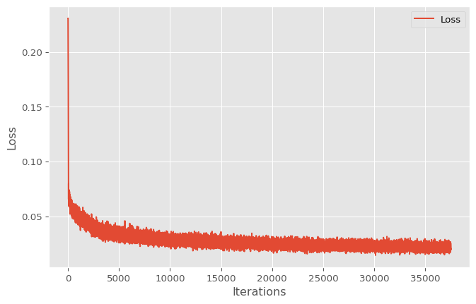
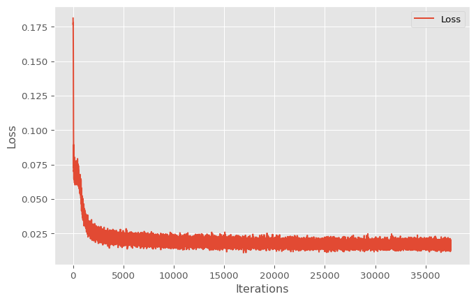
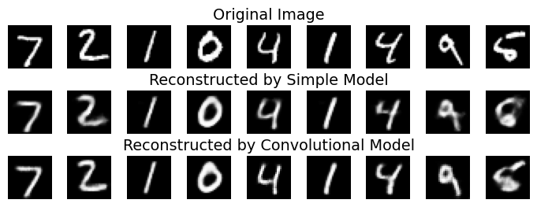
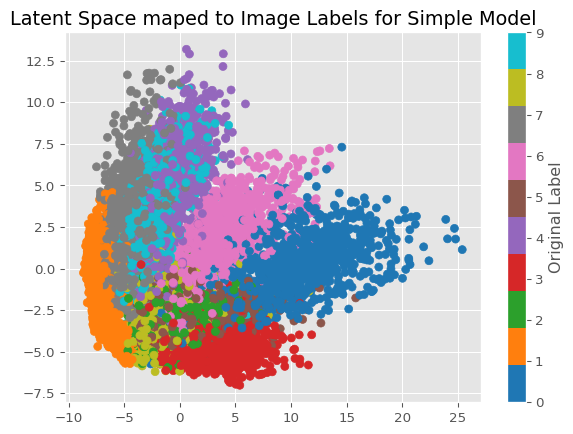
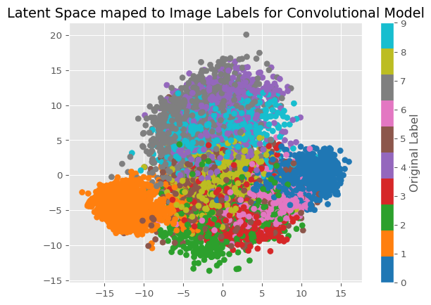

import numpy as np
import torch
from torch import nn, optim
import torch.nn.functional as F
from torchvision import datasets, transforms
import matplotlib.pyplot as plt
from sklearn.decomposition import PCA
from sklearn.cluster import KMeans
from sklearn import metricsAnalysing Autoencoder Latent Spaces with Clustering
Exploring the connection between the latent space of an autoencoder and an image classification
An auto-encoder is a type of neural network which takes a high-dimentional input and reduces it down to a low-dimentional space representation (this is called the encoder). The low-dimentional space generated by the encoder is called the latent space. Then, using the latent representation, the model reconstructs the original high-dimentional data from the input (this is called the decoder). In this project, I wanted to see if the latent representation of an image corresponds well to the image classification without showing it the actual classification. I plan to measure this by running k-means clustering on the latent space representations of the test data and measuring the purity of each cluster to see how well each cluster can stay in one group
Tools and Data used
I will be using pytorch for building and training the neural networks and sklearn for the k-means and principal component analysis algorithms.
tensor_transform = transforms.ToTensor()
dataset = datasets.MNIST(root="./data", train=True, download=True, transform=tensor_transform)
test_dataset = datasets.MNIST(root="./data", train=False, download=True, transform=tensor_transform)
loader = torch.utils.data.DataLoader(dataset=dataset, batch_size=32, shuffle=True)I will be using the MINST dataset for this project. This dataset contains 28 x 28 pixel grayscale images of hand-drawn digits with a label for what each digit is.
# sets the random seed for reproducibility
np.random.seed(42)
torch.manual_seed(42)
# pick the best deviceto use for the best performance
if torch.cuda.is_available():
device = torch.device("cuda")
elif torch.backends.mps.is_available(): # For Apple Silicon Macs
device = torch.device("mps")
else:
device = torch.device("cpu")An example of some of the images in the dataset
Building and Training the Models
Now that I have my training data, I will be using 2 different model architectures; a simple autoencoder and a convolutional autoencoder.
Simple Autoencoder
This model just uses linear layers with relu activations to compress and decompress the image. The entire image is treated as 1 long vector.
class SimpleAutoencoder(nn.Module):
def __init__(self):
super(SimpleAutoencoder, self).__init__()
self.encoder = nn.Sequential(
nn.Linear(28 * 28, 128),
nn.ReLU(),
nn.Linear(128, 64),
nn.ReLU(),
nn.Linear(64, 36),
nn.ReLU(),
nn.Linear(36, 18),
nn.ReLU(),
nn.Linear(18, 9)
)
self.decoder = nn.Sequential(
nn.Linear(9, 18),
nn.ReLU(),
nn.Linear(18, 36),
nn.ReLU(),
nn.Linear(36, 64),
nn.ReLU(),
nn.Linear(64, 128),
nn.ReLU(),
nn.Linear(128, 28 * 28),
nn.Sigmoid()
)
def forward(self, x):
encoded = self.encoder(x)
decoded = self.decoder(encoded)
return decodedThis model will be trained using the Mean Squared Error function and the Adam optimiser over 20 epochs of the training data.
model = SimpleAutoencoder()
loss_function = nn.MSELoss()
optimizer = optim.Adam(model.parameters(), lr=1e-3, weight_decay=1e-8)epochs = 20
outputs = []
losses = []
model.to(device)
for epoch in range(epochs):
for images, _ in loader:
images = images.view(-1, 28 * 28).to(device)
reconstructed = model(images)
loss = loss_function(reconstructed, images)
optimizer.zero_grad()
loss.backward()
optimizer.step()
losses.append(loss.item())
outputs.append((epoch, images, reconstructed))
print(f"Epoch {epoch+1}/{epochs}, Loss: {loss.item():.6f}")
plt.style.use('ggplot')
plt.figure(figsize=(8, 5))
plt.plot(losses, label='Loss')
plt.xlabel('Iterations')
plt.ylabel('Loss')
plt.legend()
plt.show()Epoch 1/20, Loss: 0.043992
Epoch 2/20, Loss: 0.036200
Epoch 3/20, Loss: 0.034870
Epoch 4/20, Loss: 0.024585
Epoch 5/20, Loss: 0.024596
Epoch 6/20, Loss: 0.029240
Epoch 7/20, Loss: 0.025217
Epoch 8/20, Loss: 0.027102
Epoch 9/20, Loss: 0.028093
Epoch 10/20, Loss: 0.026732
Epoch 11/20, Loss: 0.024655
Epoch 12/20, Loss: 0.022371
Epoch 13/20, Loss: 0.022165
Epoch 14/20, Loss: 0.023860
Epoch 15/20, Loss: 0.021303
Epoch 16/20, Loss: 0.025637
Epoch 17/20, Loss: 0.020340
Epoch 18/20, Loss: 0.026274
Epoch 19/20, Loss: 0.021154
Epoch 20/20, Loss: 0.020134
Convolutional Autoencoder
This model uses a mix of convolution and max pool layers with relu activation functions and some linear layers for the compression, then some more linear layers and some transposed convolution layers to decompress the latent representation of the image
class ConvAE(nn.Module):
def __init__(self):
super(ConvAE, self).__init__()
self.encoder = nn.Sequential(
nn.Conv2d(1, 8, 3, stride=1, padding=1),
nn.ReLU(),
nn.MaxPool2d(2, stride=2),
nn.Conv2d(8, 4, 3, stride=1, padding=1),
nn.ReLU(),
nn.MaxPool2d(2, stride=2),
nn.Flatten(),
nn.Linear(4*7*7, 64),
nn.ReLU(),
nn.Linear(64, 10)
)
self.decoder = nn.Sequential(
nn.Linear(10, 64),
nn.ReLU(),
nn.Linear(64, 4*7*7),
nn.Unflatten(1, (4,7,7)),
nn.ConvTranspose2d(4, 8, 3, stride=2,
padding=1, output_padding=1),
nn.ReLU(),
nn.ConvTranspose2d(8, 1, 3, stride=2,
padding=1, output_padding=1),
nn.Sigmoid()
)
def forward(self, x):
x = self.encoder(x)
x = self.decoder(x)
return xThis model is trained with the same procedure as the simple autoencoder.
model_conv = ConvAE().to(device)
loss_function2 = nn.MSELoss()
optimizer2 = optim.Adam(model_conv.parameters(), lr=1e-3)epochs = 20
outputs = []
losses = []
for epoch in range(epochs):
for images, _ in loader:
images = images.view(-1,1,28, 28).to(device)
reconstructed = model_conv(images)
loss = loss_function2(reconstructed, images)
optimizer2.zero_grad()
loss.backward()
optimizer2.step()
losses.append(loss.item())
outputs.append((epoch, images, reconstructed))
print(f"Epoch {epoch+1}/{epochs}, Loss: {loss.item():.6f}")
plt.style.use('ggplot')
plt.figure(figsize=(8, 5))
plt.plot(losses, label='Loss')
plt.xlabel('Iterations')
plt.ylabel('Loss')
plt.legend()
plt.show()Epoch 1/20, Loss: 0.027487
Epoch 2/20, Loss: 0.025497
Epoch 3/20, Loss: 0.018371
Epoch 4/20, Loss: 0.020175
Epoch 5/20, Loss: 0.019905
Epoch 6/20, Loss: 0.013630
Epoch 7/20, Loss: 0.018805
Epoch 8/20, Loss: 0.018685
Epoch 9/20, Loss: 0.017782
Epoch 10/20, Loss: 0.014887
Epoch 11/20, Loss: 0.016569
Epoch 12/20, Loss: 0.013639
Epoch 13/20, Loss: 0.017049
Epoch 14/20, Loss: 0.018295
Epoch 15/20, Loss: 0.016273
Epoch 16/20, Loss: 0.019543
Epoch 17/20, Loss: 0.019155
Epoch 18/20, Loss: 0.017221
Epoch 19/20, Loss: 0.017066
Epoch 20/20, Loss: 0.017252
Evaluating the models
Using the test data, I would like to see how well these models perform before I examine the latent space representations for both
# I am using all 10,000 images
test_loader = torch.utils.data.DataLoader(dataset=test_dataset, batch_size=len(test_dataset), shuffle=False)
dataiter = iter(test_loader)
images, truth = next(dataiter)Test data examples with reconstructions from both models
model.eval()
model_conv.eval()
simple_rec = model(images.view(-1, 28 * 28).to(device))
conv_rec = model_conv(images.view(-1,1,28,28).to(device))im_rows = 9
fig, axes = plt.subplots(nrows=3, ncols=im_rows, figsize=(im_rows, 3))
for i in range(im_rows):
axes[0, i].imshow(images[i].cpu().detach().numpy().reshape(28, 28), cmap='gray')
axes[0, i].axis('off')
axes[1, i].imshow(simple_rec[i].cpu().detach().numpy().reshape(28, 28), cmap='gray')
axes[1, i].axis('off')
axes[2, i].imshow(conv_rec[i].cpu().detach().numpy().reshape(28, 28), cmap='gray')
axes[2, i].axis('off')
axes[0, 4].set_title("Original Image")
axes[1, 4].set_title("Reconstructed by Simple Model")
axes[2, 4].set_title("Reconstructed by Convolutional Model")
plt.subplots_adjust(hspace=0.5)
plt.show()
For a more concrete evaluation of accuracy, let’s look at the Mean Squared Error for both models on the test data
simple_loss = F.mse_loss(simple_rec.cpu().detach().reshape(-1,28, 28), images.cpu().detach().reshape(-1,28, 28))
conv_loss = F.mse_loss(conv_rec.cpu().detach().reshape(-1,28, 28), images.cpu().detach().reshape(-1,28, 28))
print(f"The Mean Squared Error for the simple model is: {simple_loss:.6f}")
print(f"The Mean Squared Error for the convolutional model is: {conv_loss:.6f}")The Mean Squared Error for the simple model is: 0.021359
The Mean Squared Error for the convolutional model is: 0.016341As expected, the convolutional model performs better than the simple model for reconstructing the image
Exploring the Latent Space
Now that I have 2 functioning models, let’s get to the fun part of exploring the latent space generated by the encoders. To do this, I will be using Pricipial Component Analysis to visualize the latent spaces to get an idea for how the vectors are clustering based on category. Then, using K-means clustering, I want to see how well the categories for the original images line up with the clusters generated to see how well the clusters correspond to the original image classifications.
# get the encoders
simple_encoder = model.encoder
conv_encoder = model_conv.encoderVisualize with PCA
simple_encoder.eval()
conv_encoder.eval()
s_encodings = simple_encoder(images.view(-1, 28 * 28).to(device))
s_encodings = s_encodings.to("cpu")
c_encodings = conv_encoder(images.view(-1,1,28,28).to(device))
c_encodings = c_encodings.to("cpu")Code
s_encodings_reduced = PCA(n_components=2).fit_transform(s_encodings.detach().numpy()).T
plt.scatter(x=s_encodings_reduced[0], y=s_encodings_reduced[1], c=truth.detach().numpy(), cmap='tab10')
plt.title(label='Latent Space maped to Image Labels for Simple Model')
plt.colorbar(label='Original Label')
plt.savefig('latentspace.png')
plt.show()
Code
c_encodings_reduced = PCA(n_components=2).fit_transform(c_encodings.detach().numpy()).T
plt.scatter(x=c_encodings_reduced[0], y=c_encodings_reduced[1], c=truth.detach().numpy(), cmap='tab10')
plt.title(label='Latent Space maped to Image Labels for Convolutional Model')
plt.colorbar(label='Original Label')
plt.show()
Just from looking at these 2 graphs, we can see how some numbers appear to be in their own clusters more than others. The most consistently grouped numbers apear to be 0 and 1, while other numbers that are visually simmilar appear in less well-defined clusters, such as 9, 4 and 7. Based on what I see, I would expect the first model to have better clusterings just based on the above graphs, however, I will need to test that idea.
Evaluating K-Means
To measure how well these groups cluster I will be using a purity measure on all 10 of the clusters I generate using k-means clustering. I will be using the best model I can from running the algorithm 10 times to give this algorithm the best chance at getting a good clustering.
def purity_score(y_true: np.array, y_pred: np.array):
contingency_matrix = metrics.cluster.contingency_matrix(y_true, y_pred)
return np.sum(np.amax(contingency_matrix, axis=0)) / np.sum(contingency_matrix)# generates the clusters to evaluate
simple_clusters = [KMeans(n_clusters=10, random_state=i).fit(s_encodings.detach().numpy()).labels_ for i in range(10)]
conv_clusters = [KMeans(n_clusters=10, random_state=i).fit(c_encodings.detach().numpy()).labels_ for i in range(10)]simple_score = max([purity_score(truth.detach().numpy(), cluster) for cluster in simple_clusters])
conv_score = max([purity_score(truth.detach().numpy(), cluster) for cluster in conv_clusters])
print(f"The purity score for the simple model is {simple_score}")
print(f"The purity score for the convolutional model is {conv_score}")The purity score for the simple model is 0.6589
The purity score for the convolutional model is 0.7059Based on the scores above, we can see that the convolutional model can be clustered more effectively into groups that are related to the image labels.
Conclusion
After running this test, there appears to be a connection between the encodings and the original labels on the image, despite the model not knowing about it. If I were to continue this project, I would like to explore this relationship further with different evaluation metrics to get a better idea of how these are related, different clustering algorithms to see if other ones perform better, different autoencoding architectures and different datasets. Overall, this was a fun project and I would love to take it further :).